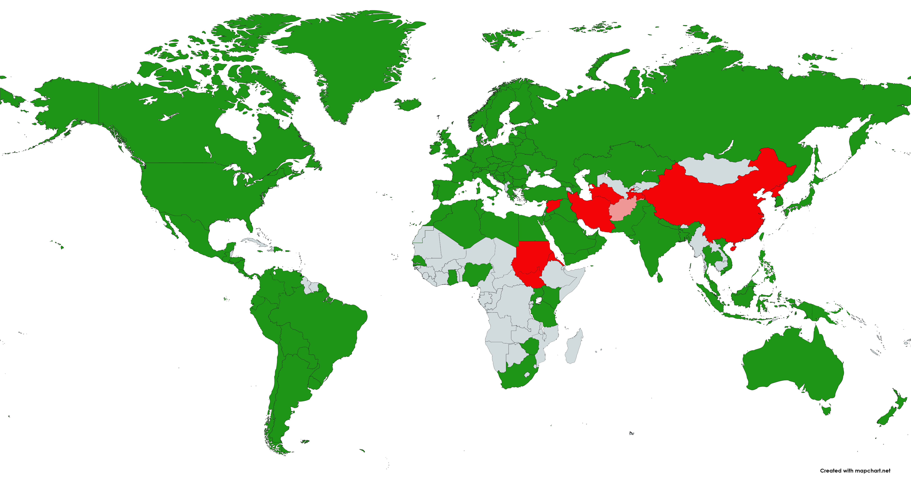

Материал из Википедии — свободной энциклопедии
YouTube(«ютьюб» или «ютюб», иногда «ютуб») — видеохостинг, предоставляющий пользователям услуги хранения, доставки и показа видео. YouTube стал популярнейшим видеохостингом и вторым сайтом в мире по количеству посетителей.
Пользователи могут загружать, просматривать, оценивать, комментировать, добавлять в избранное и делиться видеозаписями, не нарушая правила и политику пользования сервисом. В январе 2012 года ежедневное количество просмотров видео на сайте достигло 4 млрд. На сайте представлены фильмы, музыкальные клипы, трейлеры, новости, образовательные передачи, а также любительские видеозаписи, включая видеоблоги, летсплеи, слайд-шоу, юмористические видеоролики и прочее. По данным «Российской газеты», в апреле 2013 года 2 % аудитории сервиса, или 51 миллион человек, составляли россияне. На сайте есть различные музыкальные чарты, показывающие предпочтения пользователей в зависимости от географического положения.
| Содержание |
YouTube был создан в феврале 2005 года Стивом Ченом, Чадом Хёрдли и Джаведом Каримом — тремя бывшими работниками PayPal в Сан-Бруно, Калифорния. Они использовали технологию Flash Video, позволяющую получить относительно хорошее качество записи при небольшом объёме передаваемых данных. Самое первое видео — 19-секундный ролик любительской съёмки Джаведа Карима в зоопарке Сан-Диего — было размещено на YouTube 23 апреля 2005 года в 20:27 по местному времени. В ноябре 2006 года была завершена покупка YouTube компанией Google за 1,65 миллиарда долларов[12]. До покупки YouTube у Google был сервис схожей направленности — Google Видео. Представители Google не стали закрывать его, а использовали его как место поиска видео по всем видеохостинговым сайтам. В настоящее время поиск Google Video включает и YouTube. 13 ноября 2007 года YouTube запустил русскую версию портала по адресу https://www.youtube.com, открывшуюся клипом Петра Налича[13]. При этом само видео, вопреки распространённому мнению, не является первым русскоязычным видео на YouTube — до этого в 2006 году уже существовали видеоролики на русском языке, первыми из которых являются видеоролики Алексея Вишни, выложенные в сентябре 2006 года.
В феврале 2013 года был обновлён дизайн каналов[17]. В августе 2013 года появилась строка вверху страницы, которая показывала статус загрузки видео[18]. В октябре 2014 года YouTube начал поддерживать видео с частотой 48 и 60 кадров в секунду[19][20]. 27 января 2015 YouTube перешёл на HTML5-плеер, заменив стандартный вместо Flash[21][22]. 23 февраля 2015 года YouTube запустил приложение для детей под названием «YouTube Kids»[23]. 16 марта 2015 года YouTube запустил новый сервис «Подсказки», заменяющий аннотации в видео на мобильных устройствах[24]. В июле 2015 года приложение для Android обновилось до версии 10.28. Наиболее важное изменение в нём — видео, снятые вертикально, в полноэкранном режиме автоматически переворачиваются на 90 градусов и занимают весь экран[25]. 28 октября 2015 года YouTube запустил платную подписку на сервис YouTube Red. Платный сервис позволил пользователям отключать показ прероллов и рекламу. Стала доступной функция сохранения видеороликов и их воспроизведения при отсутствии подключения к интернету. Помимо этого, с приобретением подписки появился доступ к контенту, не доступному обычным пользователям[26]. 18 июня 2018 года YouTube осуществил ребрендинг сервиса, который теперь известен как YouTube Premium[27]. В начале 2016 у пользователей появилась возможность испробовать дизайн Material Design, но полного редизайна сайт не получил. Осенью 2016 года на YouTube появилась возможность добавлять конечные заставки для видео, однако, они оказались несовместимы с аннотациями. В ноябре 2016 года в России официально стал доступен сервис YouTube Gaming, предназначенный для более удобного поиска игрового контента[28]. В конце мая 2019 года Google прекратил поддержку сервиса, впоследствии упразднив его полностью, функции видеостриминговой платформы были перенесены из отдельного приложения на основной сервис YouTube[29][30][31]. В 2017 году YouTube сообщил о запуске собственной телевизионной платформы YouTube TV, которая появится на территории США в ближайшие несколько месяцев. Сервис будет работать в онлайн-режиме. Теперь пользователям можно не приобретать подписку на спутниковое или кабельное телевидение. За 35 $ в месяц подписчики получат онлайн-доступ к основным вещательным сетям и кабельным каналам. В пакет также войдёт услуга YouTube Red, которая позволяет смотреть ролики без рекламы. За дополнительную плату можно будет подключить футбольное телевидение и премиум-канал Showtime[32]. В августе 2017 года в мобильное приложение YouTube встроили раздел личных уведомлений, позволяющий пользователям делиться видео и впечатлениями от просмотренных роликов. Новая функциональность также позволяет создавать групповые чаты до 30 человек[33]. 29 августа 2017 года YouTube обновил дизайн сайта и приложений, а также, впервые с 2005 года, изменил логотип[34]. Новый дизайн выполнен в соответствии с придуманной в Google концепцией Material Design[35]. Кроме этого, теперь в мобильной версии приложения вертикальные и квадратные видео будут адаптироваться к размеру экрана, а в версии для настольных компьютеров также появилась возможность выбрать тёмную тему оформления[36]. В январе 2018 года YouTube объявил об изменениях в мобильной версии видеосервиса для Android. Пользователей ожидали режим инкогнито, ночная тема и возможность пролистывать рекламу свайпом вправо. Предполагалось, что изменения вступят в силу после установки версии прошивки 13.1.[37]. В июле 2018 года пользователям Android стал доступен ночной режим (при котором фон приложения становился тёмно-серым, а текст — белым) и режим инкогнито[38][39]. В мае 2018 года YouTube добавил музыкальные хит-парады для 44 стран с наиболее популярными песнями, клипами и исполнителями[40]. В июне 2018 года YouTube предоставил владельцам каналов, набравших более 30 тысяч подписчиков, возможность вводить платную подписку. Игровые каналы могут вводить платную подписку от одной тысячи пользователей, кроме того, неигровые каналы могут вводить эту услугу и при меньшем количестве подписчиков, при выполнении отдельных условий, оговариваемых YouTub’ом[41]. Помимо прямого увеличения доходов видеоблогеров, авторы каналов получили возможность разделять контент на общедоступный и предназначенный только для платных подписчиков, предлагать пользователям платных подписок расширенные коллекции эмодзи и прочие подобные бонусы[42][43]. В январе 2019 года администрация YouTube обновила пользовательское соглашение. С этого момента на хостинге запрещено выкладывать ролики, люди на которых могли умереть или получить серьёзные травмы в ходе различных испытаний[44]. В марте 2019 года в руководстве YouTube задумались о создании собственного интерактивного сервиса, вдохновлённые успехом аналогичного проекта Netflix. Спецподразделение возглавил Бен Реллис, который до этого 8 лет трудился в YouTube над созданием комедийного контента. До запуска полноценного формата YouTube уже имел опыт размещения интерактивной рекламы, на которой имел возможность оценить технические возможности и интерес зрительской аудитории к подобному контенту[45]. В марте 2019 года разработчиками видеохостинга была объявлено о введении в действие нового сервиса, способного уменьшить количество сфальсифицированных записей. Публикуемые материалы будут проверяться в автоматическом режиме. Тестирование планируется провести на территории Индии, и после успешных испытаний обновление будет возможно в других странах. В январе 2020 года YouTube ввёл новые ограничения на «взрослый контент» и «детский контент» для соблюдения закона COPPA. По новым правилам существенные изменения коснулись (в сторону уменьшения или полного снятия монетизации и т. п.) каналов для детской аудитории и/или с детьми-контентмейкерами[46][47]. 7 октября YouTube начал тестировать функцию выделения наиболее интересных пользователям фрагментов в видео. Участники эксперимента увидят график частоты просмотра фрагментов над красной полосой во время прокрутки видео[48]. Пока что функция доступна ограниченному количеству пользователей.
Вернутся наверхНа сайте YouTube.com: пользователи могут загружать видео в нескольких распространённых форматах, в том числе .mpeg и .avi. YouTube автоматически конвертирует их в .mp4 с использованием несвободного (патентованного) кодека H.264[уточнить], а также кодеков для формата WebM, и делает их доступными для просмотра в онлайн.
Возможно сохранение без помощи сторонних приложений. Сохранённое видео размещается в кэше браузера (если ролик имеет большой размер, в кеше может оказаться только его часть, которая просматривалась последней, как правило этого не происходит с роликами длительностью менее 15 минут).
Ролик будет иметь характерное имя (разное для разных браузеров). Найти этот файл проще всего, выполнив поиск в папке кеша со следующими параметрами: Размер — больше 100 Кб, время изменения — за последний час. Найденный файл можно сохранить (копировать) в нужное место. Если файл не имеет расширения, нужно приписать в конце расширение .flv и видео можно будет просматривать при помощи любого проигрывателя, поддерживающего FLV, например VLC.
Вернутся наверхВ 2019 году YouTube обновил правила пользования сервисом. Отныне нельзя публиковать ролики с телефонными розыгрышами или опасными для жизни и здоровья испытаниями. Согласно новым правилам, «опасные» видео будут блокироваться, а если пользователь заработает три предупреждения в течение трёх месяцев, его канал удалят. Кроме того, отныне запрещено ставить на превью роликов порнографические фото или насильственные сцены, даже если в самом видео их нет. Также в описаниях видео нельзя будет публиковать ссылки на порносайты и вредоносные ресурсы.
В 2020 году YouTube обновил условия предоставления услуг, разрешив себе показывать рекламу в видео на любых каналах — даже на тех, которые не участвуют в партнёрской программе YouTube Partner Program (YPP).[63] Если пользователь имеет подписку Premium, тогда вся реклама отключена, а также, если видео предназначено для детей.
Правила YouTube запрещают закачивать на сайт видео, содержимое которого нарушает закон США об авторском праве. 5 октября 2006 года претензии Японской ассоциации правообладателей JASRAC (англ.)русск. были удовлетворены, с сервиса были удалены 29 549 клипов и съёмок с выступлений популярных японских артистов[64]. В конце июля 2010 года командой разработчиков YouTube было принято решение увеличить максимальную длину загружаемых видеороликов до 15 минут, вместо прежних 10 минут. Ограничение в 10 минут было введено в 2006 году для предотвращения злоупотребления сервисом в целях распространения пиратского контента, когда на сервис загружались телепередачи и кинофильмы целиком, что нарушало авторские права[65].
Вернутся наверхGoogle не предоставляет подробных данных по текущим расходам на YouTube. В июне 2008 года журнал Forbes сообщил о доходе в 2008 году в 200 млн $, отметив прогресс в рекламных продажах. В январе 2012 года было подсчитано, что посетители YouTube потратили на просмотр в среднем 15 минут в день, в отличие от четырёх или пяти часов в день, потраченных типичным гражданином США на телевизор. В 2012 году доходы YouTube от своих программ оцениваются в 3,7 млрд долларов. В 2013 году (?) доходы составили сумму почти в два раза большую и, по оценкам, достигли 5,6 млрд долларов в соответствии с eMarketer, по другим оценкам — 4,7 млрд.
Подавляющее большинство видео на YouTube может свободно просматриваться и поддерживается за счёт рекламы. В мае 2013 года YouTube представил пробную схему 53 подписных каналов с ценами в пределах от 0,99 $ до 6,99 $ в месяц. Этот шаг рассматривается как попытка конкурировать с другими провайдерами интернет-сервисов подписками, таких как Netflix и Hulu[источник не указан 1706 дней]. Компания Google раскрыла рекламную выручку видеохостинга YouTube за четвёртый квартал 2019 года. Сделано это впервые за 14 лет. Так, за квартал видеосервис принёс 4,72 млрд $, за год — 15,15 млрд $, это на 36 % больше, чем в 2018 году[источник не указан 608 дней].
Неожиданный взлёт YouTube привёл к проблемам у американской компании по производству труб и рулонов Universal Tube and Rollerform Equipment Corp., чей сайт «utube.com» часто оказывался недоступен из-за огромного количества посетителей, ошибавшихся при наборе доменного имени сервиса. В начале ноября 2006 года Universal Tube подала иск против YouTube. В настоящее время по этому адресу располагается промосайт, содержащий агрессивную баннерную рекламу, тогда как основной сайт компании был вынужден переехать на доменное имя «utubeonline.com»[66].
13 марта 2007 года компания Viacom подала иск против Google, обвинив сервис YouTube в массовом нарушении авторских прав и потребовав передать ей личные данные всех пользователей сервиса. Федеральный судья Южного округа штата Нью-Йорк удовлетворил требования о передаче компании Viacom информации о пользователях YouTube (что идёт вразрез с федеральным законодательством США)[67].
Вернутся наверхYouTube стал настолько значимым явлением в медиамире, что c ним вынуждено считаться и телевидение. Многие медиакомпании создают официальные аккаунты на YouTube, осуществляя продвижение своей продукции через сервис. Ролики, обладающие статусом мема, нередко попадают в репортажи новостей. В июне 2007 года компанией CNN была осуществлена кампания по сбору вопросов от пользователей YouTube для их обсуждения в межпартийных дебатах. Компания также стала объектом значительной критики с обвинениями в фальсификациях и цензуре. Другим примером обратной связи с пользователями сервиса может служить видеообращение телекомпании Аль-Джазира, в котором её представитель пыталась выяснить мнения сообщества о возможности запуска новой службы на английском языке, созданной специально в рамках YouTube. YouTube весьма привлекателен и для небольших независимых телекомпаний и телеканалов.
Некоторые пользователи YouTube приобрели статус медиазнаменитостей (например, Boxxy), чья слава перешагнула рамки Интернета и повлияла тем самым на их судьбу. К примеру, пользователь esmeedenters, подгружавшая свои любительские видео с исполнением популярных песен, в итоге была примечена продюсером и заключила музыкальный контракт на лейбле Tennman Records, возглавляет который Джастин Тимберлейк. Также смог получить дорогостоящий контракт с крупным лейблом мальчик Джастин Бибер из Канады, чьи песни, записанные на видео, выкладывала его мать[73][74]. Другой пример — проведённый в 2010 году конкурс композиторов YouTube привлёк к себе внимание десятков тысяч пользователей Интернета и завершился исполнением произведений победителей в концерте Российского национального оркестра под управлением Теодора Курентзиса[75]. Напротив, невольный герой мема Star Wars kid[en] стал объектом насмешек в школе, что в свою очередь привело к судебному иску, поданному семьёй мальчика против его одноклассников.
Вернутся наверхВ марте 2007 года и в январе 2008 года в Турции запрещался YouTube, на котором были выложены материалы, высмеивающие высокопоставленных политических деятелей. Блокирование сайта продолжалось до тех пор, пока Google по требованию турецких властей не удалил критические видеоролики[76]. В феврале 2008 года власти Пакистана заблокировали доступ к сайту по причине размещения антиисламских материалов[77]. В марте 2009 года правительство Китая заблокировало доступ к сайту YouTube после того, как на нём появилась видеозапись избиения китайскими солдатами тибетских монахов и других жителей Тибета[78]. По сообщениям BBC, из опубликованного видеоматериала невозможно определить время и место событий, а также идентифицировать их участников[79]. Комментируя отключения, пресс-секретарь китайского МИД Цинь Ган заявил, что правительство не боится Интернета и об отключениях он слышит впервые[78]. Так же в 2009 году сайт заблокировали в Туркменистане[80].
|  Карта мира, которая показывает состояние сервиса YouTube в разных странах на 2021 год |
В конце июля 2010 года в российском городе Комсомольске-на-Амуре суд закрыл доступ к пяти сайтам, в том числе и YouTube. Причиной подобного решения стало то, что все сайты, попавшие под запрет, содержат материалы экстремистского характера[81]. Потом суд вышестоящей инстанции отменил это решение[82]. 17 сентября 2012 года премьер-министр Пакистана распорядился закрыть доступ к YouTube на территории страны из-за отказа компании Google удалить трейлер «Невинность мусульман» с сайта[83]. В тот же день стало известно, что Генпрокуратура РФ подготовила иск в суд о признании фильма «Невинность мусульман» экстремистским[84]. В свою очередь, Роскомнадзор призвал операторов связи заблокировать доступ к фильму до решения суда по иску. Он же рекомендовал СМИ не размещать ссылки на фильм или эпизоды самого фильма, обещая, в противном случае, принять меры вплоть до приостановления деятельности[85]. По словам главы Минкомсвязи РФ, если иск будет удовлетворён, а компания Google откажется заблокировать доступ к фильму для пользователей из России, то, в соответствии с недавно принятым законом, на территории РФ будет заблокирован доступ к YouTube[86]. Уже на следующий день, 18 сентября, Ростелеком заблокировал примерно на полдня доступ к сайту YouTube для жителей города Омска и Омской области[87][88].
Вернутся наверхВам нравится смотреть YOUTUBE